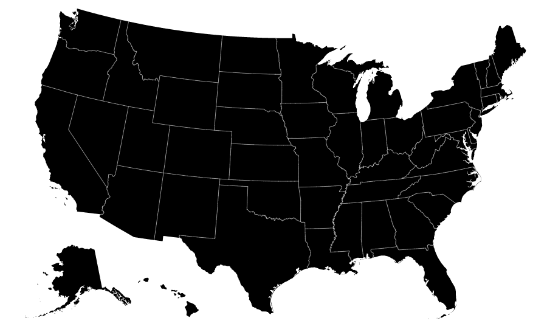

There are several different projections you can use to create maps. Here's a few from the TOPOJson package.
Albers USA Projection

Settting the projection
// Map dimensions
var w = 1280,
h = 800;
var projection = d3.geo.albers()
.scale(900) // zoom on the map
.translate([w / 2 - 200, h / 2 - 100]); // sets location of the map on the screen
Place the projection on the screen
var path = d3.geo.path()
// takes the [longitude,latitude] pairs and converts to pixel position [x,y] on screen
.projection(projection);
Create the SVG Element
var svg = d3.select("body").append("svg")
.attr("width", w)
.attr("height", h);
Drawing the actual map
d3.json("../us.json", function(error, us) {
if (error) throw error; // seems to be a convention in d3 examples to include this, does nothing
// insert all land masses and classify as land for css styling
svg.insert("path")
.datum(topojson.feature(us, us.objects.land))
.attr("class", "land")
.attr("d", path);
// drawing the state boundaries
svg.insert("path")
// specifies only internal state borders should be drawn;
// the coastlines are not stroked so as to retain detail around small islands and inlets
.datum(topojson.mesh(us, us.objects.states, function(a, b) { return a !== b; }))
.attr("class", "state-boundary")
.attr("d", path);
Add the CSS file and edit the different attributes of the map!